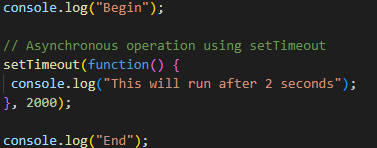

In this example, begin is logged onto the console to show where the program starts. Then the asynchronous function setTimeout is used which will log 'This will run after 2 seconds' after 2 seconds have passed since running the program. As a result of setTimeout being asynchronous the contents of setTimeout() will run after 'end' is logged.